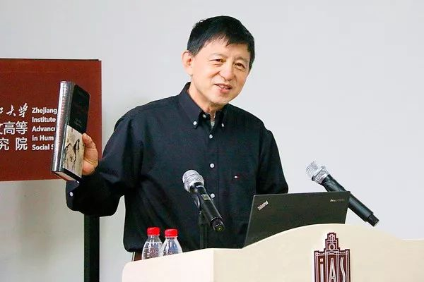

收录于合集
作者简介： 赵鼎新，1953年出生于上海，加拿大麦吉尔大学社会学博士，芝加哥大学社会学系终身教授，现为浙江大学社会学系主任，人文高等研究院院长。他的主要研究领域为历史社会学、社会运动、社会变迁、经济发展与民主转型。
文献来源： 《学术月刊》2014年第7期，第170-176页。

问： 赵老师，您好！我们知道，是由于对中国社会的关怀超越了对昆虫的喜爱，您才走上社会学研究之路的。在这个转变过程中，更深层的原因是什么？是早年的经历的影响，还是当时时势使然？
赵： 我想，更重要的还是时势使然。1986年我到蒙特利尔麦吉尔大学学习昆虫学。从上海出发时，我的导师杨平澜握着我的手说: 赵鼎新，学成后赶紧回来，报效祖国。1989年4月5日，我回到上海看望他时，他却告诉我，近年千万不要回来，眼下社会问题太多。此后几个月，我久久不能平静。昆虫学博士论文只剩十几页了，却始终不能动笔。我那时也许应该进行几次心理咨询，问题是我当时都不知道有这一职业的存在（电影中看到过，但是与真实世界联系不起来）。经过几个月的人生低潮，我决定改学社会学。 我们这代人往往有很强的鲁迅情怀，即想通过自己的行为来改变中国，当时的我也不例外。当然，在此后的几年，随着阅读面越来越广，我的眼界和想法都发生了很大的改变。 我现在最不想当的就是一个救国救民的英雄，或者是一个“国师”。我绝不会觉得社会如果不依照我的主张发展就不会“进步”。我只希望能做好一个学者，为社会学的发展，为中国社会思想的多样性做出一些贡献。 另外，早年的经历对我这一抉择也有很大影响。“文革”开始时我小学刚毕业。1966-1969年间，学校大多数时间处于停课和瘫痪状态。我等于是没上过中学就作为“知识青年”中的一员，随着“上山下乡”的大流去了银川，并在1970年进了工厂，一干就是八年。当时银川生活艰苦，加上语言和文化上的隔阂，以及不甘心在工厂干一辈子等等原因，促使我开始自学。“文革”时国家权力极其强势，政治极端，个人生活完全由政治支配，我们这代人因此都很关心政治。我在自学中看了不少哲学、政治和历史的书籍，包括马克思的《资本论》等书籍。因此，社会科学可以说始终是我的兴趣。
问： 近期，越来越多的经济学家和政治学家建立各种数学模型来预测和解释一些经验社会现象。您本人似乎比较青睐机制的研究方法。对于这两种研究方法，您有何见解。
赵： 定量与定性方法各有用处。 比如，若想知道一个社会的人口、离婚率和人均收入、人均寿命、工资结构等等问题，大概一定要有统计数据才能了然。不过，我们如果想知道和描述一个社会事件的来龙去脉，比如说乌坎事件的起因和发展、为什么某一个拆迁行动导致了严重群体性事件，等等，访谈也许就会更有效。当然，大多数研究既需要定性数据也需要定量数据，不能一概而论。
在硕士阶段研究棉红铃虫的种群动态时，我与一个同事建立了一个预测棉红铃虫种群动态的数学模型。有一次和一位植保员交谈，他问我：我是否能用你们的模型来对大田里的棉红铃虫的动态做预测？他继续说，如果能的话，我就不需要每周两次到大田里顶着烈日通过取样来调查棉铃虫种群动态了。我的回答是，我们的模型只建立在两年调查的基础上，数据还很不够。他又问道：那可以再等几年，等你有了多年的数据不就可以了吗？我说，还是不行，因为我们在棉花田里搭了透风笼子，或者说我们的模型是在控制了棉红铃虫迁移的条件下建立的。该植保员说：红铃虫幼虫迁移性不强，这问题可能不大。我又告诉他我们的模型没有纳入气候的因素，在棉红铃虫的幼虫前期，一场大雨会导致很大的死亡率，而气象因素是不可预测的。这时他就反问我，那你们的模型又有什么用呢？当时我嘴上没说什么，但是心里很不舒服。一方面认为该植保员对理论的意义很不理解，但另一方面又时常想起着他的提问：我们的模型的到底有什么意义，或者说有多大的意义？
后来在麦吉尔大学读昆虫学博士。这次我研究一种蛀蚀胡萝卜的象虫。我的模型更加复杂：包含虫子本身的种群动态模型、胡萝卜在不同种植期的生长模型和市场价格模型。最后做成了一个预防胡萝卜象虫的动态性经济阈值（dynamic economic threshold）计算机专家系统，能根据胡萝卜的不同种植期而形成的不同的胡萝卜价格和不同的象虫种群动态而对胡萝卜害虫防治作出不同的建议。一天我把这模型介绍给一位加拿大的胡萝卜害虫防治的“植保员”，让他提些意见。他饶有兴趣地玩了一会后，评价道，这个模型有不少启发性，但是实际用处应该不大。我问他为什么。他说，“就给你说一点，胡萝卜一旦被象虫蛀了，它表面就有了黑洞和带了泥土的斑痕。象虫能吃掉多少胡萝卜，但是一捆胡萝卜中如果有几根被咬过的胡萝卜谁还肯买它？”
问： 那如果再把这个变量也考虑进去呢？
赵： 人的感受这一变量很难界定，而且就算是加进了这个变量，总还有其他未包含的变量。在研究昆虫种群动态十来年的生涯中，我始终被以下的问题困惑。一者，模型中加的子模型、变量和参数再多，模型模拟现实的程度总是有限，因为有些变量和参数并不具有可预测性；二者，模型过度复杂，只一味地想接近现实的话，模型就成了对现实的一种“叙事”，完全失去了理论意义。
生物学如此，社会学更是如此， 各种定量方法，比如网络分析、数学模型、博弈论、计算机模拟、以及统计方法，都有它们的用处，又都有很大的弱点和应用局限。 或者说 定量研究是很需要的，但是它不应该是社会科学的唯一方向，甚至是最为主要的方向。 但是，由于多种原因，定量方法走向强势的趋势可能会难以阻挡。
以机制为核心的理论在美国又被称之为中层理论。 我介绍这一方法并不等于我认为这一研究方法是最优的选择；于我，它是青年学者入门社会学的第一步。社会学首先不同于经典物理学，没有牛顿定理这样的统一法则；其次它不像生物学，决定生物世界运行的机制虽然成千上万，但是这其中每一个机制都和该机制的功能之间有一个明确的对应关系。（比如饭后犯困的原理是：饭后血糖浓度升高，为了不使过高的血糖给生命带来危害，我们身体就会释放胰岛素来降低血糖浓度，在短时间内甚至能把血糖降到比饭前更低的水平，这时人就会犯困。）因此，一个生物现象背后的机制就能用科学实验的方式来寻找和证实，而且一旦找到某一机制后该生物现象也就得到了解释。但是， 人是有能力做出选择、运用各种“理论”来论证自己选择正确性、并建立组织和制度来保护自己既得利益的动物。人的这些特性使得许多社会机制失去了生物学意义上的机制和功能之间的一一对应；使得一个机制能在不同场合下起作用；使得一个机制在社会上的重要性会随着人们对它了解的程度而变化；给了人通过社会设计来增强和削弱某些机制在社会上影响力的能力和野心；并且给了人们用“客观”机制来论述其行为正确性的动机。
社会机制的这些特性给我们解释社会现象带来很大的困难。最主要的问题是：针对一个具体的社会现象，研究者总是能找到许多机制来解释这一现象，并且如果研究者是一个逻辑很强的人，他也总是能给他的解释加上一个听上去合情合理的叙事。 因此， 在社会学领域，以机制为基础的研究经常能导致一些风牛马不相及的叙事。 问题是， 如果社会科学叙事不用机制的话，我们就可能会完全忽视社会现象背后的规律。因而，强调机制是保证社会学研究科学性的底线，但是机制研究的弱点是需要克服的，也是在一定的程度上是可以克服的， 这是后话。
问： 可否请您再进一步谈谈对自然科学的方法在社会科学中运用的现象，比如量化方法的引入，是否有需要警惕的地方？
赵： 量化的引入有利有弊。好处是，量化能帮助我们接触到许多定性分析揭示不了的社会现象和背后的机制，比如刚才提及的各种重要的数据。弊端是，量化可能会使社会学研究从问题驱动转变成方法驱动——即研究不再从经验问题出发，然后应用有效的方法来揭示其背后的规律；而是从所掌握的方法出发，寻找容易运用该方法的经验问题。 如此，很多重要问题都会被忽视。 过度量化的还有一个弊端就是，定量方法对具有一定智力水平的青年学者来说相当容易学，发表文章也要容易得多。 不少做定量研究的学者虽然对社会现象不甚了了，但文章却发表了一堆，并在升等、涨工资等等许多方面都有重大优势。这种现象如果兴盛就会使得扎实做定性研究的学者失去成长空间。
问： 那能否这样理解？定量揭示的数据能给我们重要的信息，但至于这个信息背后的意义，还是需要定性的东西来揭示。
赵： 有些定量方法的确是无法揭示数据背后的意义，但是有些定量方法却也是能够在一定程度上揭示数据背后的意义的。但是我这儿所说的情况可能要更复杂一些。比如在 特定社会结构中某个具体事件或是个体行为的重要性和意义如何去定量呢？历史上许多偶然事件以及许多社会现象，我们很难应用数学方法。
定量方法的另一个局限就是：人有着给社会现象赋予意义的能力，不管这些对社会现象意义的理解是否反映现实，但是这些理解却都有可能引发实实在在的后果。定量方法在面对意义层面上的议题时往往显得无能为力。真实世界是非常复杂的，能通过定量来阐释的部分往往只是比较浅层的（虽然也很关键）。
问： 在您看来，影响和决定社会运动产生与发展的宏观结构，可概括为如下三个因素：变迁、结构与话语。您如何理解互联网这种传播技术革命对社会、国家乃至对社会学研究的影响？
赵： 从这个框架看，互联网的出现本身就是个重大的社会变迁。它会导致社会结构和话语的变化：首先，社会人员更有发言权（empowered）了，且这种权力是弥散在整个社会中的（每个人都可以有个微博，或者是微信等等）；其次，国家和国家官员也必须应对互联网带来的挑战。过去的社会控制方式已经行不通了，比如封锁消息，比如警察在公共空间中的暴力。官员行为也必须改变，比如公然炫富或者经常在奢侈场所出没、比如在重大灾害或者事故面前表现的极其无能，等等。这些行为在互联网时代都会对官员形象乃至国家形象造成巨大损害。
中国近几十年取得的成就和突显的矛盾都是真实的存在，再加上国内国际信息流通空前便利，使得互联网中的话语走向多元化。
问： 那么我们是否可以用您的理论框架中的“变化、结构和话语”这三点与社会现象进行一一比对来进行研究和叙事？
赵： 理论如果被这样应用太可怕了。斯梅尔塞的加值理论提出后，就有人按照斯梅尔塞理论中的六个“变量”来组织其专著中的材料和写作，比如第一章写“结构诱导因素”，第二章写“结构性社会紧张”等等。一个历史性事件被割裂成了互不相干的因素，机械得实在有些可怕。斯梅尔塞的加值理论、蒂利的动员模型以及我提出的理论，有的仅仅是一些启发意义，或者说仅仅为大家在研究社会运动或者革命的时候提供若干切入点而已。在一个具体的社会运动或者是革命中，变迁、结构和话语这三个因子的重要性以及相互关系都在不断变化，我们必须把它们放到情境中解读才有意义。同样重要的是，我并没有一个统一的、能超越经验来建构“变迁、结构和话语”这三个“变量”在一个社会运动或者是革命中的相对重要性和相互关系的方法：不同的问题视角会带来不同的建构，不同的价值观也会带来不同的建构。同样一场社会运动，从左派的角度出发，国家可能是导致这场社会运动的形成和发展的关键，而右派也许会认为社会变迁才是一运动发生的最为重要的原因。在我的博士论文中，我没有用“变迁、结构和话语”来组织叙事，就是因为这些原因。
问： 芝加哥大学社会学系是美国第一个社会学系，可谓社会学的发源地。可否请您从问题、理论和方法三个角度比较一下中国社会学与世界主流社会学的差距或差异。
赵： 我想，芝加哥大学之所以能成立第一个社会学系乃至形成芝加哥学派，无非是美国社会学家把欧洲出现的社会学首先在问题意识上美国化了（研究工业化背景下的城市犯罪、城市移民和城市骚乱），然后形成了具有美国式保守主义特色的以“解决问题不讲主义”为核心的实用主义（pragmatism）社会学理论，其具体表现就是符号互动理论的发展和芝加哥城市生态的研究。 20世纪不少国人到欧美读社会学。到了三四十年代，中国产生了不少优秀社会学家，如陈达、费孝通、吴文藻等等。他们发表的文章和书籍，在今天看来水平也不低。当时中国可以说是西方国家以外的一个社会学重镇。但是，中国学者从问题意识到研究方法基本沿用了当时欧美流行的一套，并没有像美国学者一样发展出具有中国特色的问题意识和社会学理论。
我们不应当过高要求民国时期的学者，因为即使在今天，中国社会学也尚未形成自己的问题意识和与之相应的理论和研究方法。 当前中国社会学研究主要有两类，一类是用西方的问题意识和方法做研究，但水平则大大不如西方学者；一类只讲中国的故事，或者提出一些完全不具有互通性的概念，好像中国人是另一类物种，其行为完全不符合西方人已经发展出来的，大量的能刻画人类普遍性行为的机制和概念。
问： 类似您已提及的，中国的社会学研究有这样几个倾向，一是以“西方为中心，以西方为方法”，二是“以中国为中心，以中国为方法”，三是“以中国为中心，以西方为方法”。您认为，是否需要建构中国特色的新的理论体系呢？这样的努力能否成功？
赵： 当然需要。在国内外的许多中国学者都在这方面做了努力，我也试图做了一些尝试。举一个例子，我在2012年发表的一篇文章中，对国家合法性的分类和分析显然是受到了韦伯的权威合法性理论的启发。但是我的分类，即现代国家只有三种理想状态的合法性来源（意识形态、程序和绩效）却是针对我所关心的中国问题而提出的。但是，这一新的分类有它的相通性或者说普遍性，因为现代所有国家的合法性都逃不出这三个来源（只是不同国家在这三方面的具体配置有所不同而已），因此任何国家的政治特征都可以用我的合法性分类来作出分析和解释。
至于我们的努力能否能成功？我想， 一定程度上的问题意识中国化是比较容易做到，我们不少学者也做到了。但是要提出具有中国特色，并且被其他国家学者普遍接受的主要理论却不一定能实现。这是因为现代中国尚没有产生不同于欧美，却在世界范围非常具有影响的社会思潮。 或者说，在欧美国家，左派、右派、自由派、保守派、实用主义、后现代等等各种思潮都很发达，把意识形态光谱几乎全占了。 在方法层面也同样难以突破。比如中国人讲关系，西方人却发明了网络分析方法 ；比如我对国家合法性的分类虽然有新意，但这也不过就是对西方的理论（即韦伯的合法性理论）的发展。
中国也许有两个优势。 其一，晚清和民国时期的西方和日本对中国的侵略其实并没有对国人在心理上产生摧毁性的影响。 因此在印度和中东一带知识分子中盛行的——表面上是在对后殖民主义和欧洲中心主义进行批判，其实却是在西方人面前感到自低一等的——“解构主义”传统在中国很难盛行。 第二，中国人有很强的辩证思辨和长时段的历史理性传统。
西方也有一些能通观全局进行长时段思考的优秀学者，但是他们在西方是绝对的非主流——西方社会学乃至社会科学的主流是那些“片面深刻”的机制性研究方法和解构方法。 因此，国人也许在这方面可以做些努力。我过去十年对中国历史的研究其实就是想在这方面做些尝试。必须指出的是： 传统中国的辩证思维和史观既故弄玄虚又大而化之，我国当代学者的文章经常有明显的大而无当的倾向，即受此传统的影响。但是，如果能把西方片面深刻的研究方法和我们长时段的辩证历史理性有机地结合起来，那就有可能产生与西方知识能相通的“中国方法”。
问： 有人认为，中国的社会转型有一个明确的目标——欧美；也有人认为中国转型不能限于此，应超越这种见解的束缚。您认为对这种见解的超越是否应当成为我们这一代学者的追求；另外，中国能否走出与西方不一样的路呢？
赵： 中国传统社会没有一个线性的发展目标，一个朝代在开国和拓疆后的最大目标只是政权的稳定，大众都是臣民，人性和人际关系被以孔孟之道为核心的各种价值观和与之相应的社会组织紧紧地约束着，人的工具理性的一面只能以非常扭曲的形式得以表达。 但是，西方的枪炮和高效的工业把中国（以及世界上所有的非西方国家）都强行地推向了“现代化”。早先无非就是想拥有和西方一样的“先进”枪炮，但是逐渐就发觉必须获得西方的工业生产能力、创造发明能力、社会动员能力和组织能力才能不被它国欺负，于是全面向西方学习就成了目标。 中国所有的传统价值和政治形态，只要对赶超西方不利的都逐渐被打破，人的工具理性和物质欲望于是得到了空前的发展。
我个人认为想超越传统的“赶超欧美观”的努力是可敬的，而且是必须的。 但是我们必须清醒地认识到以下几点： 第一，超越西方现代模式的企图并不是中国特有的，西方世界自己也在努力破除线性思维方式，建立后工业社会价值观，试图超越由市场经济和民族国家所带来的现代性，只是这些尝试从总体上来说都不是很成功。 第二，不考虑市场多方面的负面性，仅从资源配置的角度来看，市场是最有效的手段。因此，在市场经济仍是全球主导经济模式的情况下，哪个国家不搞市场经济，这个国家的长时段的经济效益和创造能力肯定就会不如那些采用市场经济的国家，这个国家在国际上就会缺乏竞争力。因此，仅仅有一两个国家率先不搞市场经济，试图超越西方模式肯定行不通。 第三，要超越“超越欧美”的这种现代性思维模式，我们必须要把人类已经解放了的工具理性、个性表达和强烈的物质欲望用意识形态来加以约束，并且建立和这意识形态相应的强制性或者是半强制性的组织来保证这一意识形态得到贯彻。 问题是，人类的工具理性和物质欲望一旦被释放之后，把它重新放回笼子里的可能到底有多大？特别是，任何压制工具理性的努力在约束工具理性的同时并不能消除甚至是减弱人类工具理性的一面，而只会导致工具理性以扭曲的形式表达——压制越严重，工具理性的表达就越扭曲。
问： 您游走中美学界，如何看待东西方国家的社会差异及其变迁对社会学发展的影响？
赵： 我想，人都是两个眼睛，一个鼻子，都是差不多的，即都有工具理性的一面，也有价值理性的一面。但是人的本性以什么方式表达则受到很多社会因素和社会学机制的影响。比如， 中国传统社会的价值观严重压抑工具理性，压抑个性，而现代中国则是工具理性和人欲泛滥；再比如社会稳定性和可预测性与个体行为之间的关系：当社会运行规则变化莫测时，机会主义文化就难免盛行，做老实人就会吃亏；而当社会稳定，将来可以被预测时，做长期打算的人就会有优势，机会主义行为就会边缘化。
插问： 那中国多变的环境对社会学的发展是不利的吗？
赵： 当然，对任何学术发展都不利。学术要发展，大环境就得稳定。学术是个长线投资， 要想做好学问，就得静下心来。 现下中国学界规则多变、不少方面甚至没有什么真正的规则可言。因此机会主义的学术行为在中国就十分盛行：多发文章、多拿课题成了主要的目标，人际关系远比学术水平重要，不规范学术行为司空见惯。所以，不管学者本身天分和水平如何，在多变的环境和体制的压力下，生产出来的知识很容易是垃圾，用物理学的词汇来说就是“白噪音”。
插问： 但即便是白噪音，还是不能停止啊。
赵： 那是的。如果停止了，一个学者连升等的机会都没有了。
问： 当今中国的思想界，党同伐异的风气泛滥。在探讨和辩论时，不同派别往往回避核心观点的碰撞，常常只作道德批评和人身攻击，令人堪忧。请问，西方思想派别之间的辩论又是如何进行的呢？
赵： 在西方，具有不同价值观的两个人之间要进行有效辩论也是很难的；而且也存在党同伐异的情况。但是， 中国式辩论又有两个新的特点。第一是人身攻击和辱骂。第二是坚信对方是别有用心，或者说坚持认为对方某一观点的背后是某种不可告人的目的：你的某一个观点对政府不利会被认为被西方势力买通，你的观点对政府有利则马上就被认为是“五毛”。人们头脑里全是近乎歇斯底里的阴谋论，很难就事论事。在西方社会，这些行为都是为主流社会所不齿的。
另外，西方世界的舆论和思想领域有很重要的一个特点：主流大学、主流出版社和主流报纸和网站都有着很强的守门人（gate- keepers）功能。它们既能够建构公众舆论和主流思想，又具有一定的专业素质，为社会上的辩论和讨论问题的方式提供了样板。比如马来西亚航班失踪事件，我们看到中国的新闻媒体完全没有起到守门人的作用。主流媒体中充斥着煽情和谣言，而记者则完全没有独立分析能力。这种做法在报道国内新闻或者是面对国内读者时问题不大，甚至还会得到大量的叫好声，但是面对国际读者时就出丑了。美国的新闻从业人员虽然不是完全公正的，某些方面甚至是充满偏见，但他们更有专业精神，在许多问题上也表现更有常识。
比如，《纽约时报》关于这次飞机失事事件不但新闻报道的质量较高，它网上读者跟帖的平均水准也很不错。特别是，报社编辑还会专门从网上讨论中拣择出他们认为水准较高文章加以标记。这种选择既体现了编辑的眼光，也保证了舆论的质量，理性精神因此就逐渐成了社会的主流文化。中国人这种只要观点不一致，马上就攻击对方的人品、怀疑对方的企图的做法都是传统社会、特别是阶级斗争时代的影子，不应该再存在下去了。
问： 赵老师，历史社会学是您的研究方向之一，你认为当下中国流行的新文化史学、社会史只见树木不见森林，把历史学变成为了庆祝现代人观点与声音多样性的手段，虽然新文化史缺乏“大历史”关怀，但对于底层声音和地方经验的commitment不容忽视，而近年流行的全球史观念有救新文化史之弊，不知您怎么看？
赵： 现在不但有“全球史观”，还有“非西方史观”、“亚洲史观”、“南美史观”、“非洲史观”等等、等等，不一而足, 甚至还有什么“客体本体论”（objectoriented ontology）。如果有人有一天提出什么“非地球本体论”或者是“非太阳系本体论”，我看也不需要吃惊。全球史观在早期发展中出了一些优秀学者（比如William McNeill），他们的工作指出了不少被人忽视的各个文明之间的相互联系和这些联系对历史进程的重要影响。但是当全球史发展成一个显学时，它马上就出现了以下问题： 第一，许多全球史专家不精通任何一个国家的历史，对研究对象的语言和历史文本完全不能掌握，工作非常粗糙，结论漏洞百出（所谓“加州学派”学者的工作基本就是这个水平）。 第二，历史是拥有权力的社会行动者（social actors）所推动的。当然这些社会行动者的行为方式，以及他们行动的后果，都要受到各种社会机制和结构条件的约束。 全球史观过度讲各文明之间的联系（外因）对历史进程的影响，忽视了社会行动者的权力，并过度依赖社会机制和约束条件进行历史叙事。因此，他们的叙事非常机械，“内因”的作用普遍被忽视，论点也往往风牛马不相及。 第三，全球各文明之间的确有多方面的联系。但是，各文明之间的联系是在历史过程中逐渐加深的。 各文明在不同方面的联系程度以及某一特定联系对各文明的影响程度都是很不相同的（哥伦布时代，欧洲的天花等流行病“杀死”了新大陆近百分之九十的土著居民，而新大陆的梅毒仅仅给欧亚大陆带来了一种严重的性病）。各文明之间在不同方面的联系具有不同的进程。并且在现代社会到来之后，各文明之间才有了全面紧密的联系（比如，欧亚大陆在流行病方面的联系很早就比较紧密，但是在思想方面的紧密联系则是19 世纪以后的事情了）。即使在当今，全球各国的联系程度，紧密联系的方面，以及这些联系对各国的影响既是不对称的，也是完全不相同的。因此， 离开具体的经验问题去强调各文明之间的联系（或者是不强调它们之间的联系）都是没有意义的。 第四，推动全球史观的学者往往有很强的政治动机——即破除西方中心主义。问题是，当代社会几乎所有的主流文化和制度——从社会主义到资本主义、从机械化制造到金融市场、从民主政体到威权政体、从民族国家到国际秩序——都是在西方先形成，然后在西方的压力下在世界范围内得到扩展的。 即使是当前的各种原教旨主义宗教，它们的复兴也是在面对西方给世界带来的“现代化”的负面后果时的反应。当前世界在经济、政治和文化层面都已经在很大程度上被强迫“现代化”了。中国的“崛起”（或者说东亚的崛起）最多也只说明西方世界也许不再将是“现代化”的领头羊了。除非一个国家能真正在政治、经济、文化层面上走出一条不同的道路（我在前面说过，这种“赶超欧美观”很可能是乌托邦），弱势国家的知识分子过度强调去西方中心主义实际上是在臆想，或者说是因为“现代化”道路不能畅通而丧失信心的一种世俗性表达（而原教旨主义则是一种“超越性”的表达）。
问： 赵老师，在当今中国浮躁的氛围下，有人提出克服此种浮躁需倡导“一本书主义”，即必须写一部立得住、传得下去的书，要有一本足以支撑自己的书。对有此志向追求的青年学者，您有什么忠告？还有据说您的新书The Rise of the Confucian-Legalistic State and Its Legacies in Chinese History（ 儒法国家的形成和中国历史的规律）将要完成并准备出版，可否谈谈您下一步的研究计划？谢谢！
赵： 不能说是什么忠告，只能说是一些个人的看法。 首先，做学问的真谛在于好奇、认真、执着和社会关怀，它是一种生活方式。把写一部传世名著作为做学问目标会活得太累且过分自负。 其次是要一步一步来。四十岁前的学者在书本阅读、学术视野、人生阅历、对各种方法的掌握以及笔力方面都需要提高。 第一部作品就想写成传世名著在当今学界的可能性很小，而在中国则几乎不可能。因此 把预期定得太高反而会欲速而不达。 从发表常规文章开始，逐渐锻炼效果可能反而会更好。 第三是千万不要自以为是。 要 对自己的性格弱点和学术短板有个深刻理解。 做好学问如其说是要发挥自己的长项，不如说是要努力克服自己的短板。社会科学的学问最终体现的是自己的个性，而性格弱点则是个人学术发展的最大制约因素。 第四点就是绝对的现实主义精神。 这一点非常难以做到。而且，因为绝大多数人都多做不到，你一旦做到了还会给你带来许多困扰和误解。但是它却是把学问做深刻的关键。我的《儒法国家的形成和中国历史的规律》已经完成。现在正在校订，大约明年会在牛津大学出版社出版（编注：牛津大学出版社已经于2015年出版）。下一步我有两个写作计划。第一是写一本题为《威权论》（Authoritarianism）的书籍; 第二是写一本社会科学方法论的著作。同时，我还对中国的民族和宗教问题越来越感兴趣，如果条件许可也会做一些研究。
（封面图片来自浙江大学人文高等研究院，全文内容有少数改动）
编辑：吴温泉